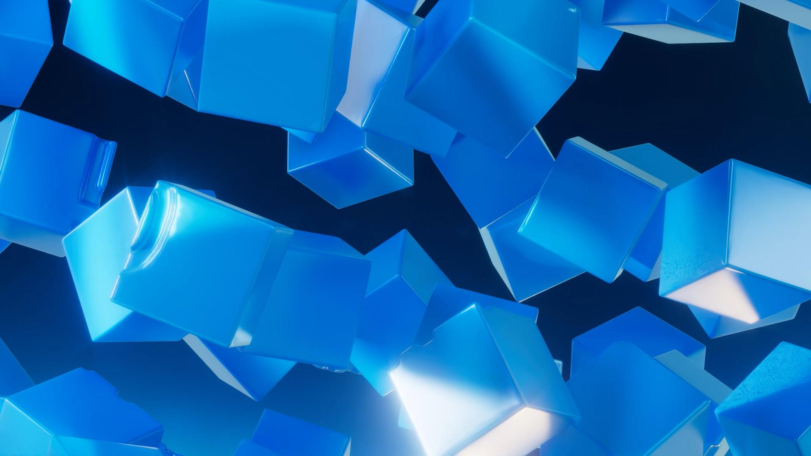
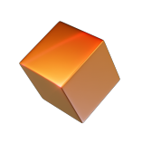

Машины уже едут.
Инфраструктуру проверяем попутно.
«Попутно» следит за телекоммуникационными шкафами (ТКШ) и распределительными щитами (РЩ) на опорах МГТС. Сегодня по фото бригад, дальше по кадрам камер служебных машин. Здесь собраны знак, цвет, шрифты, компоненты и голос продукта. Страница сама собрана на этих токенах: всё, что видно ниже, можно скопировать в деку, сайт и интерфейс.
Знак
Рамка камеры, объект и линия маршрута
Цвет
navy · signal · scan · slate · статусы только для объекта
Шрифты
Unbounded
Golos Text
JetBrains Mono
Голос
«Коррозия корпуса · ТКШ-20251015 · уверенность 0.95 · 26.11 10:42»
внимательный обходчик
Что внутри
Девятнадцать разделов. Порядок от смысла к коду: идея, знак, основа, приёмы, продукт, носители, голос, проверки, токены. Кто торопится, читает 10 правил в конце.
Камера замечает объект по пути
Служебные машины МГТС проезжают 20–100 км за выезд, и по пути стоят опоры со шкафами ТКШ и щитами РЩ. Модель смотрит фото, находит коррозию, деформацию и сорванное крепление, а человек проверяет только то, в чём она не уверена. Сегодня фото снимает бригада, дальше камера на машине: всё происходит попутно.
Имя описывает механику продукта. Машина едет по своим делам, и проверка инфраструктуры получается сама, без маршрута для обходчика и без новых действий водителя.
В тексте пишем «Попутно» с заглавной, в кавычках только при первом упоминании. Логотип набран строчными: попутно. Латиница для путей, файлов и доменов: poputno.
Как собран знак
Знак повторяет то, что делает продукт. Сначала едет машина, потом камера берёт объект в рамку, потом объект отмечен. Этот же порядок проигрывает анимация знака и загрузчик.
Линия маршрута проходит через кадр и уходит за его край. Срезы на концах показывают движение.
Четыре уголка, как рамка детекции вокруг найденного объекта. Рамка не замкнута: внутри остаётся воздух.
Точка: объект, который проверяем, шкаф или щит. Циан значит «модель видит», тот же цвет у рамок на фото.
Линия прерывается у точки: объект в фокусе, маршрут продолжается за рамкой.
Какие имена отклонили
Искали слово, которое объясняет механику без пояснений. Два других кандидата говорили о процессе, который мы как раз убираем.
Говорит, как работает продукт: проверка идёт по пути, без отдельного выезда. Звучит спокойно, читается с первого раза, хорошо склоняется в речи: «увидели попутно».
Так называется ручной осмотр, который продукт заменяет. Имя обещало бы старый процесс в новой обёртке.
Слишком близко к охране и слежке. Камера смотрит на шкафы и щиты, а не на людей, и имя не должно намекать на обратное.
Знак и логотип
Знак строится на сетке 64 из трёх элементов: четыре уголка рамки, точка объекта и линия маршрута. Логотип: знак и слово попутно, Unbounded 600 в кривых, строчными, трекинг −2 %. Все файлы собирает logo/build_logo.py из одной геометрии.
Построение и охранное поле
Сетка 64. Рамка 48 × 48 с отступом 8, плечо уголка 17, штрих 6, внешний радиус 2. Точка Ø 16 в центре 32 / 32. Линия маршрута толщиной 6 выходит за рамку на 8 и обрывается срезом 3. Охранное поле равно плечу уголка: 17 / 64 высоты знака, около 27 %.
- Сетка
- 64 × 64, шаг 4viewBox="0 0 64 64"
- Уголок
- плечо 17, штрих 6, радиус 2.pp-mark__c--tl / tr / br / bl
- Точка
- Ø 16, центр 32 / 32.pp-mark__dot · --logo-dot
- Маршрут
- толщина 6, вылет 8, срез 3, зазор до точки 3.pp-mark__route-l / -r · --logo-mark
- Охранное поле
- 17 / 64 высоты знака со всех сторон
- Логотип
- знак + слово, зазор 16 / 64, слово по высоте строчных 28 / 64Unbounded 600 · трекинг −2 % · в кривых
- Цвет
- рамка и маршрут signal, точка scan--p-signal-500 · --p-scan-400
Варианты
Основной вариант живёт на navy. На светлом фоне синий темнеет до signal-600, точка до scan-600, иначе циан теряется. Одна краска: для печати, гравировки и наклеек. На signal знак и слово белые, точка остаётся циановой.


Минимальные размеры
Полный знак от 24 px, логотип от 96 px по ширине. Меньше 24 px только favicon.svg: он нарисован на сетке 32 без линии маршрута, потому что в 16 px она сливается с уголками.
Нельзя
Знак держится на трёх простых формах, поэтому любое искажение сразу заметно. Метки «нельзя» здесь серые, а не красные: тёплые цвета в бренде заняты состоянием объекта.
Знак в движении
Маршрут прорисовывается слева направо, уголки защёлкиваются к объекту из масштаба 1.15, точка загорается циановым. Всего 900 мс, последний кадр равен статичному знаку. Это же движение в цикле служит загрузчиком в продукте.
При «меньше движения» знак сразу в последнем кадре, загрузчик медленно мерцает точкой.
Фавикон во вкладке
Плитка navy со скруглением 7 / 32 держит знак на любой вкладке. Заголовок вкладки: «Раздел | Попутно».
Цвет
Два слоя. Палитра --p-* хранит сырые значения, компоненты берут только смысловые токены, а тема их переназначает. Тёмная тема основная: диспетчерская, проектор, дека. Светлая нужна бригаде на улице днём и для печати.
Главное правило
Бренд холодный, тёплые цвета означают только состояние объекта. Если на экране появился жёлтый, оранжевый или красный, значит, со шкафом или щитом что-то не так. Кнопки, графики, прогресс и акценты всегда холодные. Единственное исключение: красная обводка ошибки ввода.
Холодный · бренд
Фон, знак, кнопки, ссылки, фокус, линии маршрута, графики, рамка «модель видит».
Тёплый · состояние
Пилюля статуса, метка на карте, рамка дефекта на фото, шкала опасности. Зелёная «Норма» и серая «Не наблюдается» тоже живут только здесь.
Пропорции на экране
Экран диспетчера почти целиком navy и нейтральный. Синий занимает десятую часть, циан остаётся точечным. Статусные цвета появляются там, где есть объект, поэтому их мало и они заметны.
Палитра
В каждой ячейке «Аа» тем цветом текста, который на ней читается, и его контраст. Точка отмечает опорный шаг. Нажмите на ячейку, чтобы скопировать токен.
Смысловые токены в двух темах
Тёмная тема не инвертирует палитру, а переназначает роли: заливки в ней полупрозрачные, текст статусов светлее, фокус циановый. Контраст считается в браузере: текст к своей подложке (порог 4.5), графика к фону страницы (порог 3). Нажмите на имя, чтобы скопировать.
| Токен | Тёмная | Светлая | Назначение |
|---|
Статусы объекта
Пять состояний. У каждого есть цвет, иконка, слово и форма метки на карте, поэтому статус читается и без цвета. «Не наблюдается» обведён пунктиром: это честное «не видно», а не норма. Проверьте переключателем.
Объект цел. Модель уверена в норме или диспетчер отклонил находку.
Уверенная норма (≥ 0.85) закрывается без человека.
--status-ok · -fg · -bg · -border · -solidВозможен дефект. Модель что-то увидела или сомневается в норме.
Кадр уходит в очередь проверки.
--status-suspected-*Нужен ремонт. Диспетчер подтвердил находку.
Создаётся наряд бригаде. Снимается только закрытием наряда.
--status-defect-*Угроза жизни или транспорту: шкаф или щит отходит от опоры, держится на кабеле.
Тревога в обход очереди. Пилюля пульсирует один раз.
--status-critical-* · .pp-status--pulseОбъект не виден: снег, ветки, размытый кадр, шкаф вне кадра.
Статус не меняется в «норму». Ждём следующего проезда.
--status-not-observed-* · пунктирШкала опасности
Опасность дефекта идёт по тем же тёплым цветам и в том же порядке. Уровень дублируется числом столбиков: четыре столбика читаются в любой печати. Верхний уровень называется «Угроза жизни» и всегда идёт в обход очереди.
Подождёт планового ТО. Скол краски, стёртая маркировка.
--sev-lowИсправить за дни. Повреждение ЛКП, поверхностная коррозия.
--sev-mediumСтавим в ближайший наряд. Деформация корпуса или климатического отсека, сквозная коррозия.
--sev-highТревога сразу. Нарушено крепление: шкаф может упасть с опоры.
--sev-critical · -bg · -fgТипографика
Три гарнитуры с открытой лицензией, все с полной кириллицей и лежат локально в fonts/. Широкий Unbounded для крупного, Golos Text для интерфейса, JetBrains Mono для всего, что пришло из данных.
Обложки, заголовки разделов, KPI, логотип. От 20 px. Широкий гротеск отвечает MTS Wide организаторов, но остаётся своим.
АБВГДЕЁЖЗИЙКЛМНОПРСТУФХЦЧШЩЪЫЬЭЮЯ абвгдеёжзийклмнопрстуфхцчшщъыьэюя 0123456789 № ₽ %
РЩ-29172891 · 55.7522, 37.7155 · 26.11 10:42 · --status-defect
Шкала
Одиннадцать ступеней. Межстрочный падает с ростом кегля, трекинг у крупного отрицательный. Образцы набраны строками из продукта.
30–72 · 1.08 · −0.035em
Unbounded 600Машины уже едут
32–48 · 1.15 · −0.025em
Unbounded 600Очередь проверки
28 · 1.25 · −0.02em
Unbounded 600Шкаф ТКШ-20251015
20 · 1.3
Golos 600История проездов за 30 дней
18 · 1.35
Golos 600Обширная коррозия корпуса ТКШ
16 · 1.55
Golos 400Модель нашла обширную коррозию на боковой стенке шкафа. Фото снято бригадой в 10:42, дефект виден целиком.
14 · 1.45 · интерфейс
Golos 400Диспетчер подтвердил находку. Наряд ушёл бригаде, объект ждёт ремонта.
13 · 1.3
Golos 600Подтвердить · Ложное · Нужен кадр
12 · 1.4
Golos 400Последнее фото 26.11 10:42 · уверенность 0.95
11 · 1.3 · +0.04em
Golos 600 · капсКритичные · 3
36–56 · 1 · −0.03em
Unbounded 600 · tabular20–100км за выезд
Правила набора
- Unbounded только от 20 px: заголовки, обложки, крупные цифры.
- Интерфейс и текст на Golos Text, 14 px по умолчанию.
- ID, координаты, уверенность, время, имена токенов на JetBrains Mono.
- Все цифры табличные: font-variant-numeric: tabular-nums.
- Строка текста до 68 знаков, буква ё, кавычки «ёлочки».
Абзацы и подписи на Unbounded: в мелком кегле он слипается.Капс длиннее двух слов, кроме ярлыка micro.Моноширинный для обычных фраз: он сигналит «это данные».Курсив и подчёркивание для акцента. Акцент даёт вес 600.Разрядку в тексте. Положительный трекинг только у micro.
Числа, ID и координаты
Значения модели и координаты пишем так, как они лежат в данных: точка, моноширинный. Величины для людей пишем по-русски: неразрывный пробел перед единицей, разряды пробелом, диапазон через короткое тире. Табличные цифры держат колонки ровными.
| Что | Формат | Пример |
|---|---|---|
| ТКШ, телекоммуникационный климатический шкаф | ТКШ-NNNNNNNN | ТКШ-20251015 |
| РЩ, распределительный щит | РЩ-NNNNNNNN | РЩ-29172891 |
| Объект не в реестре | IMG-имя файла, подпись «Объект не сопоставлен» | IMG-0412 |
| Уверенность модели | 0.00–1.00, два знака | 0.95 |
| Координаты | широта, долгота, 4 знака, WGS 84 | 55.7522, 37.7155 |
| Время в списках | ДД.ММ ЧЧ:ММ | 26.11 10:42 |
| Дата в документах | день месяц год | 26 ноября 2026 |
| Расстояние | NBSP перед единицей, диапазон через – | 20–100 км |
| Деньги | разряды пробелом | 200 000 ₽ |
| Число, которого нет | видимый плейсхолдер | [ДАННЫЕ] |
88.88
14.81
РЩ-29172891
Пропорциональные: колонка гуляет
88.88
14.81
РЩ-29172891
Табличные: --numeric
Отступы, сетка, формы
Шаг 4. Радиусы сдержанные, «приборные»: продукт ближе к пульту диспетчера, чем к витрине. Поверхности плоские, границы рисует линия 1 px через inset-тень, настоящая тень есть только у того, что лежит поверх.
Отступы
Тринадцать ступеней от 2 до 96. В разметке берём алиасы по роли: --space-element 12, --space-card 20, --space-page 24, --space-section 64.
Радиусы
Шесть значений. Внутренний радиус меньше внешнего на величину отступа, поэтому кнопка в карточке получает 8, а карточка 12.
Глубина
Четыре уровня. На странице карточка отделена линией, тень появляется, только когда элемент лежит над картой или над другим содержимым. В тёмной теме тень глубже и с оттенком navy.
Высота контролов
Три высоты: 32 для таблиц и плотных панелей, 40 по умолчанию, 48 для главного действия и телефона. Зона нажатия не меньше 44 даже у компактной кнопки: недостающее добирает прозрачный отступ.
Сетка экрана и слайда
Экран диспетчера: шапка 56, очередь 300, кадр и решение занимают остаток, история 260. На 1024 история уходит в карточку, на 768 очередь становится отдельным экраном. Слайд 16 : 9 делится на 12 колонок с полями 5 %, сверху заголовок-вывод, под ним одно демо.
Брейкпоинты: 480 · 768 · 1024 · 1200 · 1440 (--bp-*)
1920 × 1080: поля 96, колонка 120, промежуток 24
Иконки
Один набор из 36 иконок: сетка 24, штрих 1.75, круглые концы и стыки, цвет через currentColor. Иконки статусов окрашены статусом, остальные берут цвет текста. Колодец и опора остались в запасе от первой версии кейса. Нажмите на иконку, чтобы скопировать ссылку на неё.
Построение
- Сетка
- 24 × 24, живое поле 20, отступ 2
- Штрих
- 1.75, у 48 px 1.5--stroke-icon
- Концы
- круглые концы и стыки, без заливок
- Формы
- круг Ø 20 и квадрат 18 визуально равны
- Статусы
- своя форма у каждого: галочка, вопрос, ключ, молния, перечёркнутый глаз
- Подключение
- <svg class="pp-icon"><use href="icons.svg#i-cabinet"/></svg>
Графические приёмы
Два фирменных приёма, оба взяты из работы продукта. Уголки рамки показывают, куда смотрит камера. Линия маршрута показывает путь машины и порядок событий. Декора без смысла нет: если на носителе нет объекта или пути, приём не нужен.
Рамка на кадре
Циановые уголки: модель видит объект. Оранжевые: найден дефект. Красные: «Критично», тревога в обход очереди. Полупрозрачные: кандидат ниже порога, человек решает сам. Рамка лежит на снимке, поэтому одинакова в обеих темах.
Иллюстрации вместо снимков. В продукте под рамкой фото с выезда. Фото датасета ДСС показываем, если организаторы разрешат.
Анатомия находки
Четыре части в постоянном порядке. Бирка говорит, что найдено и насколько модель уверена; подпись под кадром говорит, где и когда. Уверенность всегда моноширинным, с точкой.
- Уголки. Плечо 14, штрих 2, лёгкая тень для читаемости на любом снимке. --detect-arm · --stroke-detect
- Что найдено. Класс дефекта словами из словаря, без кодов. .pp-detect__tag
- Уверенность. Два знака после точки, моноширинный. Цвет бирки повторяет цвет уголков. __tag b
- Где и когда. ID объекта, адрес, время кадра поверх градиента. .pp-detect__caption
Уголки вне кадра
Тот же приём работает как фокус и акцент. Одна рамка на экран или слайд: если уголками отмечено всё, не отмечено ничего.
Фокус в списке
Выбранная карточка в очереди или на карте. .pp-corners --corners-inset
Акцент на слайде
Одна главная цифра в рамке. Остальные цифры без неё.
Очередь пуста
Пустое состояние
Рамка без объекта: камера смотрит, но нечего показать.
Линия маршрута
Тонкая линия --route-line толщиной 2 работает как разделитель, история объекта и прогресс. Узлы на ней окрашены статусом, если это события объекта, и синие, если это шаги процесса.
- 24.11 09:12Проезд, норма
- 25.11 17:03Не наблюдается: снег
- 26.11 10:42Нарушено крепление · 0.93
Кто решил: модель или человек
Система подсказывает, решает человек. Находку модели видно по маленьким циановым уголкам и числу уверенности. Решение человека отмечено сплошной плашкой с иконкой. Обе метки стоят рядом, когда диспетчер подтвердил находку.
- Рамку ставим вокруг настоящего объекта: на фото, в карточке, на карте.
- Оранжевые и красные уголки только при найденном дефекте.
- Линия маршрута всегда горизонтальная или повторяет улицу.
- Одна рамка-акцент на экран или слайд.
Замкнутый прямоугольник вместо уголков: это уже не камера, а таблица.Уголки вокруг заголовков и кнопокради украшения.Градиентная или пунктирная линия маршрута. Пунктир занят «не наблюдается».Число уверенности без рамки и подписи: непонятно, к чему оно.
Анимация
Движение объясняет, откуда пришло и куда ушло. Ответ на клик короче 300 мс, выход короче входа, анимируем только transform и opacity, без пружин и ease-in. Выразительное движение оставлено редким событиям: появление знака, новая находка, тревога.
Кривые
Четыре кривые, у каждой своя роль. Наведите или нажмите на карточку, чтобы прогнать кубик по кривой.
Длительности
Полоса пропорциональна времени. Значения читаются из токенов прямо сейчас: при «меньше движения» длинные станут 1 мс.
Каталог движений
Демо проигрываются, когда попадают в экран. Кнопка справа повторяет.
Первый вход и загрузчик. Один раз за сессию.--dur-mark --ease-route --snap-scale
Линия проходит по кадру, затем рамка вырастает из маленького прямоугольника и проявляется.--dur-draw --dur-grow --grow-scale pp-snap
Старое значение уходит, новое приходит снизу на 4 px. Цвет меняется вместе с формой.--dur-base --shift-anchor
Критичная встаёт первой, список сдвигается, пилюля пульсирует один раз.--dur-panel --enter-scale --dur-pulse
Путь рисуется слева направо, объекты отмечаются, когда машина их проезжает.--dur-draw --ease-route --stagger
Скелетон появляется через 200 мс и держится не меньше 300, чтобы не мелькать.--delay-skeleton --dur-shimmer
Нажмите: кнопка сжимается до 0.97 за 140 мс. В ожидании ширина держится, подпись прячется.--press-scale --dur-press
Выезжает на 24 px, живёт 5 с, ошибка 10 с. Уходит быстрее, чем пришёл.--shift-toast --dur-panel --toast-life
Новая тема раскрывается кругом от кнопки. С клавиатуры и при «меньше движения» смена мгновенная.--dur-reveal --ease-in-out
Меньше движения
Настройка системы переопределяет токены, компоненты не меняются. Смысл остаётся: статус всё так же меняется, просто без сдвига.
| Что | Обычно | При «меньше движения» |
|---|---|---|
| Знак и маршрут | прорисовка 900 мс | сразу последний кадр |
| Сдвиги и масштаб | 6 px, 4 px, 0.95, 1.15 | 0 и 1 |
| Смена цвета и прозрачности | 160–200 мс | остаётся: это не движение |
| Загрузчик | маршрут едет по кругу | точка медленно мерцает, 2400 мс |
| Пульс «Критично» | одно кольцо 1200 мс | нет, остаются цвет, иконка и слово |
| Скелетон | мерцание 1600 мс | статичная подложка |
Компоненты
Всё ниже живое: классы pp-* из components.css, без отдельной стилистики для брендбука. Один компонент на роль, состояния одни и те же: обычное, наведение, нажатие, фокус, загрузка, неактивное.
Кнопки
Одна основная кнопка на экран. Подпись строим как глагол и объект: «Создать наряд», «Открыть объект». Кнопка в ожидании держит ширину, чтобы соседи не прыгали.
| Вариант | Обычная | Наведение | Нажатие | Фокус | Загрузка | Неактивная |
|---|
Статус, опасность, происхождение
Поля и выбор
Таблица объектов
Плотная, ID моноширинным, числа вправо. Выбранная строка отмечена линией маршрута слева.
| ID | Тип | Статус | Дефект | Опасность | Уверенность | Последнее фото |
|---|---|---|---|---|---|---|
| ТКШ-39104938 | ТКШ | Критично | Нарушено крепление | Угроза жизни | 0.93 | 26.11 10:42 |
| РЩ-29172891 | РЩ | Проверить | Возможна коррозия | Средняя | 0.72 | 26.11 10:31 |
| ТКШ-38060694 | ТКШ | Дефект | Деформация климатического отсека | Высокая | 0.88 | 25.11 16:20 |
| РЩ-20190131 | РЩ | Не наблюдается | Снег на корпусе | нет данных | 0.41 | 25.11 17:03 |
| ТКШ-26435078 | ТКШ | Норма | нет | нет | 0.97 | 26.11 10:30 |
Карточки и цифры
Щит РЩ-29172891
Числа в образцах условные. Настоящие придут из одного файла данных.
Обратная связь
Очередь пуста
Все находки разобраны. Новые появятся здесь сами, критичные встанут первыми.
Данные и графики
График отвечает на один вопрос. Всё серое, один акцент signal на том, о чём вопрос. Подписи стоят у данных, а не в легенде. Статусные цвета появляются, только если график буквально про статусы объектов.
Акцент на ответе: какой дефект, какая неделя. Остальное --chart-series.
Значение в конце столбика, моноширинным. Легенда только для двух и больше рядов.
Столбики от нуля, одна ось, сетка едва видна. Две величины, значит два графика.
Пока цифры нет, стоит [ДАННЫЕ]. Образцы ниже на условных данных.
Цифры сводки
Акцент на повреждении ЛКП: о нём вопрос. Остальные столбики для сравнения.
Строки: разметка. Столбцы: ответ модели. Диагональ обведена. Одна шкала signal. Промпт подбирали на этих же фото, честная оценка будет на новых.
Подписи со словом и числом. Порядок как в шкале: норма, проверить, дефект, критично, не наблюдается.
Карта
Подложка тихая: кварталы чуть светлее фона, дороги без подписей, кроме главных. Цвет на карте есть только у объектов и маршрута. Метки различаются формой: круг, треугольник, ромб, восьмиугольник и пунктирный круг читаются и без цвета.
Схема, а не настоящая подложка. В датасете ДСС координат нет, объекты различаем по ID. Карту рисуем, когда координаты даст GPS камеры на машине.
Метки
Метка 24 px, кольцо цвета фона отделяет её от соседей. У жёлтой метки на светлой подложке кольцо тёмное, --map-pin-ring-suspected: иначе она сливается с кварталом. Кластер нейтральный, контрастный подложке и с числом: он не притворяется статусом. Выбранную метку берут в циановые уголки, как объект на кадре.
Экраны
Как бренд живёт в продукте. Это договор о компоновке, а не пиксельный макет: экраны собраны из тех же компонентов и токенов, что выше. Диспетчер и руководитель работают в тёмной теме, бригада на улице в светлой. ID из датасета ДСС, остальные данные условные.
Нарушено крепление
ТКШ-39104938 · ул. Авиамоторная, 8 · фото 26.11 10:42
Объект
- Тип
- ТКШ, климатический шкаф
- Опора
- № 14
- Фото
- 3 за 30 дней
История
- 24.11 09:12Норма
- 25.11 17:03Не наблюдается: снег
- 26.11 10:42Нарушено крепление
Шкаф ТКШ-38060694
опора у ул. Красноказарменная, 12 · координаты появятся с GPS
- 25.11 16:20Модель: деформация климатического отсека · 0.88
- 25.11 16:31Диспетчер подтвердил
- 25.11 16:40Наряд бригаде 3
- Тип
- ТКШ, климатический шкаф
- Класс
- МП, деформация
- Опасность
- Высокая
- Фото
- 4
Закрепить шкаф на опоре
- Найдено
- 26.11 10:42
- Решение
- подтвердил диспетчер
| Район | Объектов | Покрытие | Критичные |
|---|---|---|---|
| Лефортово | 412 | 2 | |
| Перово | 538 | 1 | |
| Соколиная Гора | 297 | 0 |
Носители
Бренд вне интерфейса: дека защиты, бейдж участника, наклейка на блок камеры, мерч, превью для ссылок, README. Носитель растягивается целиком: размеры внутри заданы в долях ширины. Логотипы организаторов показаны текстовыми плашками: настоящие файлы ставим только по их правилам.
Слайды защиты
Тёмный navy, крупный заголовок на Unbounded в две строки, вывод выделен цветом signal внутри заголовка. На слайде одна мысль и одно демо. Логотипов организаторов на слайдах нет: кейс назван словами в строке обложки. Дека берёт цвета только из tokens.css.
Бейдж, наклейка, мерч
Физические носители из предметной области. Наклейка на блок камеры объясняет водителю и прохожим, что делает камера. Мерч тихий: маленький знак на груди, слово и маршрут на спине.
Финал · 26.11.2026 · МТУСИ
Превью и README
Превью ссылки 1200 × 630 в двух темах: заголовок не меньше 5 % ширины, иначе в мессенджере он не читается. Баннер README лежит на navy и одинаково выглядит в светлом и тёмном GitHub.
Машины уже едут. Инфраструктуру проверяем попутно.
Мониторинг инфраструктуры МГТС с камер служебных машин
Машины уже едут. Инфраструктуру проверяем попутно.
Мониторинг инфраструктуры МГТС с камер служебных машин
Попутно
Модель на каждом фото, человек только на сомнительном. Следующий шаг: камера на машине.
Попутно
Модель на каждом фото, человек только на сомнительном. Следующий шаг: камера на машине.
Совместное размещение с МГТС и «Кодом города»
Мы гости в кейсе МГТС, поэтому хозяин стоит первым и крупнее. Сейчас организаторы названы словами: строка «Кейс МГТС · Код города» на обложке деки, на бейдже и в превью. Файлы их логотипов ставим, только если организаторы попросят, и только по правилам ниже. В интерфейсе продукта их нет.
высота нашего логотипа ≤ высоты логотипа организатора · зазор с линией = 40 при высоте 56
наш знак крупнее хозяина, нет разделителя
- Порядок. МГТС, затем «Код города», затем «Попутно»: хозяин первым и в строке, и в локапе.
- Разделитель. Вертикальная линия 1 px высотой с логотип организатора. Отступы с обеих сторон равны.
- Масштаб. Наш логотип не выше логотипа организатора и меньше по площади.
- Файлы. Логотипы организаторов только из их файлов, без перекраски и обрезки. Шрифты MTS не используем.
- Фон. Navy или белый. Их синий #008AE0 не ставим большой плашкой рядом с нашим signal: два почти одинаковых синих спорят.
Внимательный обходчик
Так говорил бы опытный мастер участка: коротко, с местом и временем, без паники. Неизвестное называем неизвестным. Система подсказывает, решает человек, и тексты это не прячут.
Конкретные
а не расплывчатыеЧто, где, когда и насколько уверены. Цифра вместо прилагательного.
Коррозия корпуса · ТКШ-20251015 · уверенность 0.95 · 26.11 10:42
Спокойные
а не тревожныеДаже критичное без восклицаний и капса. Срочность передают порядок и цвет.
Шкаф ТКШ-39104938 отходит от опоры. Тревога ушла дежурному.
Честные
а не всезнающие«Не наблюдается» не равно «норма». Модель советует, решение подписано человеком.
Не наблюдается: снег на корпусе. Нужно новое фото.
Пишем и не пишем
Фразы из интерфейса, деки и уведомлений.
| Ситуация | Пишем | Не пишем | Почему |
|---|---|---|---|
| Находка | Коррозия корпуса · ТКШ-20251015 · уверенность 0.95 · 26.11 10:42 | Место, время и число, без нагнетания | |
| Объект не виден | Не наблюдается: снег на корпусе | Честное «не знаем» отдельно от нормы | |
| Роль модели | Модель считает, что это коррозия, а не грязь. Решите сами. | Система подсказывает, решает человек | |
| Тревога | Шкаф отходит от опоры · ТКШ-39104938. Разобрать сейчас | Капс не ускоряет реакцию, адрес ускоряет | |
| Кнопка | Создать наряд · Подтвердить · Нужен кадр | Глагол и объект: понятно, что случится | |
| Ошибка | Фото не загрузилось: сервер модели не отвечает. Повторим через 5 минут. | Что, почему, что дальше | |
| Пустая очередь | Очередь пуста. Новые находки появятся здесь сами. | Спокойно и по делу | |
| О продукте | Бригада снимает шкаф, модель смотрит фото, диспетчер видит только сомнительное. Дальше камера на машине. | Механика вместо эпитетов |
Формула сообщения об ошибке
Четыре части в одном порядке. Текст сервера не показываем: берём фразу из словаря по коду ошибки.
Фото не загрузилось
сервер модели не отвечает
Повторим через 5 минут сами
Статусы словами
| Статус | В предложении | Не говорим |
|---|---|---|
| Норма | Шкаф в норме, последнее фото 26.11 10:30 | |
| Проверить | Нужно проверить: возможно, коррозия корпуса | |
| Дефект | Дефект подтверждён, ждёт ремонта | |
| Критично | Критично: шкаф держится на кабеле | |
| Не наблюдается | Не наблюдается: снег, ветки, размытый кадр |
Словарь
| Говорим | Что это | Не говорим |
|---|---|---|
| Объект | ТКШ или РЩ с ID из реестра | |
| ТКШ | Телекоммуникационный климатический шкаф на опоре, с климатическим отсеком сверху | |
| РЩ | Распределительный щит, питание оборудования на опоре | |
| ЛКП | Лакокрасочное покрытие. «Повреждение ЛКП»: краска сошла, коррозия поверхностная, сквозная или обширная | |
| МП | Механическое повреждение: деформация корпуса, двери, крыши, перекос климатического отсека | |
| Нарушение крепления | Шкаф или щит отходит от опоры, держится на кабеле | |
| Фото | Снимок объекта: сегодня бригада, дальше камера на машине | |
| Проезд | Машина проехала мимо объекта, камера сняла кадр. Следующий шаг продукта | |
| Находка | То, что модель увидела на фото | |
| Уверенность | Число модели от 0 до 1 | |
| Очередь проверки | Находки, которые ждут решения диспетчера | |
| Наряд | Задание бригаде на ремонт объекта |
Пунктуация и запреты
- Точка-разделитель «·» в мета-строках:
ТКШ-20251015 · 10:42
. - Кавычки «ёлочки», буква ё, заглавная только в начале фразы.
- Короткое тире только в диапазонах: 20–100 км.
- Двоеточие перед причиной:
Не наблюдается: снег
.
Длинное тире в интерфейсе и на слайдах.Восклицательные знаки, капс, эмодзи.Конструкцию «не просто X, а Y».«Загрузка…» вместо скелетона, прочерк вместо «нет данных».
Слова, которые вычёркиваем при вычитке:
Доступность
Диспетчер работает ночью и с клавиатуры, бригада на улице в перчатках и на солнце, деку смотрят с проектора. Правила ниже покрывают все три случая. Проверки на этой странице живые.
Контраст
Текст не ниже 4.5 : 1, значимая графика не ниже 3 : 1, в обеих темах. Циан не бывает текстом на светлом.
Фокус
Одно кольцо на всё: 2 px с отступом 2. Циан на тёмном, синий на светлом. Нажмите Tab на этой странице.
Клавиатура
Очередь разбирается без мыши. Клавиши работают и в русской раскладке.
Не только цвет
У статуса есть иконка, слово и форма метки, у опасности число столбиков. Выключите цвет и проверьте.
Меньше движения
Системная настройка переопределяет токены: сдвиги и масштаб обнуляются, прорисовки становятся мгновенными. Смысл остаётся.
Читалки и пальцы
Новые находки объявляет aria-live="polite", тревогу role="alert". Зона нажатия от 44 px, на телефоне кнопки 52 px.
«Шкаф ТКШ-20251015, коррозия корпуса, уверенность 0.95, 26.11 10:42»
Референсы
Жюри весь день смотрит синие кубы «Кода города». Мы живём в той же вселенной, но говорим своим голосом: берём ночной navy и место для синего, а каждый приём организатора переводим в смысл продукта. Цвета сняты пипеткой с материалов чемпионата.
Палитра организатора
Шаблон «Код города» и светлый шаблон МГТС. Значения приблизительные: JPEG-фоны дают разброс ±5–10 по каналам.
Что взяли и как переделали
Материалы организатора
Только для сверки. В наших носителях эти картинки не используются.


Factmap как эталон структуры
Дизайн-система Factmap задала уровень: ритм «правило, живое демо, токены моноширинным», двухслойные токены, живые проверки контраста и цвета, каталог движений, итоговые правила. Палитру, шрифты и знак мы не брали.
- Шапка, навигация со скользящим индикатором, тема без вспышки.
- Каждый блок начинается с правила с числами.
- Пересчёт контраста в браузере, переключатель «без цвета».
- Каталог движений с повтором, «меньше движения» на уровне токенов.
Кобальт и лайм, тёплые оливковые нейтрали.Красные метки «нельзя»: у нас тёплое занято статусами.Чат и подбор отелей: заменены очередью проверки и картой объектов.Переключатель RU / EN: аудитория русскоязычная.
Токены
Один файл tokens.css подключают брендбук, дека и сайт. HEX-литералы живут только в нём. Ниже весь список: значения показаны для текущей темы, нажатие копирует var(--имя).
10 правил
Весь брендбук на одном экране. Если времени нет, этого достаточно.
Жёлтый, оранжевый, красный только у статуса и опасности. Кнопки, графики и акценты холодные.
Иконка, слово и форма метки. «Не наблюдается» обведён пунктиром и не равен норме.
Дека, сайт и брендбук берут только var(--…). Компоненты используют смысловые токены, не палитру.
Golos Text для интерфейса, JetBrains Mono для ID, координат, уверенности и времени. Цифры табличные.
Не перекрашиваем части, не растягиваем, не поворачиваем. Полный знак от 24 px, логотип от 96 px, поле 17 / 64.
Циан: модель видит. Оранжевый: дефект. Красный: критично. Одна рамка-акцент на экран или слайд.
Точка знака, рамка детекции, фокус на тёмном, «найдено моделью». Не текст на светлом, не большие заливки.
На экран одна синяя кнопка. Подпись: глагол и объект. Графики: серый и один акцент.
Отклик до 300 мс, выход короче входа, только transform и opacity, «меньше движения» на уровне токенов.
Что, где, когда, насколько уверены. Неизвестное называем неизвестным. Решает человек.
Допущения и неизвестные
Что в брендбуке условно и чем это заменится.
| Что | Сейчас | Когда и чем заменим |
|---|---|---|
| Имя команды | Команда [НАЗВАНИЕ], в исходнике [TODO: имя команды] | Подставить во всех носителях поиском по маркеру |
| Фото объектов | Векторные иллюстрации шкафа ТКШ на опоре | Фото датасета ДСС с рамками модели, если организаторы разрешат показ |
| Число объектов, точность, размер датасета | [ДАННЫЕ] | Из одного файла deck/numbers.json, утром 26.11 |
| Числа на экранах и графиках | Условные, подписаны | Из API: /api/stats, /api/quality |
| Классы дефектов | Четыре класса датасета ДСС: норма, ЛКП, МП, крепление | Новые классы добавляем в ml/taxonomy.json |
| Карта | Схема без настоящей подложки, в датасете координат нет | Рисуем, когда координаты даст GPS камеры на машине |
| Логотипы МГТС и «Кода города» | Текстовые плашки | Файлы организаторов по правилам совместного размещения |
Файлы
| Файл | Что это |
|---|---|
| tokens.css | Палитра, семантика двух тем, шрифты, отступы, радиусы, движение |
| components.css | Компоненты pp-* на токенах |
| fonts/ | Unbounded, Golos Text, JetBrains Mono в woff2 и fonts.css |
| icons.svg, icons/ | 31 иконка спрайтом и по отдельности |
| logo/ | Знак, логотипы, фавикон SVG и PNG 180 / 192 / 512, maskable, манифест, превью, анимация |
| index.html, brandbook.css, brandbook.js | Этот брендбук; tools/build_brandbook.py вклеивает спрайт, знак и копию токенов |
| contrast.md | Таблица контраста всех пар в двух темах |
| CHANGELOG.md | Журнал правок токенов: 1.0.1 циан светлой темы, 1.0.2 токены карты |

Что осталось сделать
- Токены, компоненты, знак, иконки, брендбук v1.0
- Контраст текстовых пар в обеих темах не ниже 4.5
- Вставить имя команды вместо [НАЗВАНИЕ]
- Заменить иллюстрации кадрами датасета с разметкой
- Подставить цифры вместо [ДАННЫЕ] из numbers.json
- Фавиконы PNG 180 / 192 / 512 и maskable из того же знака
- Токены карты --map-* в tokens.css, обе темы